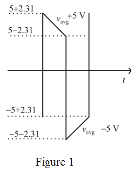

Step 1:
Refer to Figure 17.24 (b) in the text book for the bistable multivibrator circuit.
Refer to Figure 17.23 (b) for the output limiter circuit connected to the bistable multivibrator circuit. The resistance R in the circuit is denoted as  .
.
The output voltage of the circuit  is,
is,
Here,
is the forward voltage of diode 
is the forward voltage of diode 
is the Zener voltage
Substitute 0.7 V for and and 5 V for .
Step 2:
Write the formula for the period T of the output waveform.
Here,
 is the time constant
is the time constant
 is the feedback gain
is the feedback gain
Substitute for T and for  .
.

Substitute for f, for C and 0.462 for  .
.
~
Thus, the resistance R in the circuit is .
Step 3:
Determine the threshold voltage levels.

Draw the output voltage waveform.

Step 4:
Determine the average current in the RC network.
Step 5:
Write the formula for the feedback gain

.
Substitute 0.462 for  and for
and for  .
.
…… (1)
The output voltage for one half cycle from the circuit is,
Substitute 5 V for and for I.
Substitute 50000 for in equation (1).

Determine the resistance.
Step 6:
Apply nodal analysis to the output node.
Thus, the resistance values of the limiter circuits are,
.